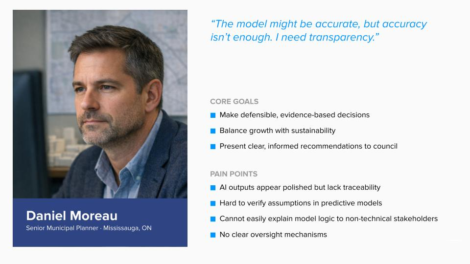

Planners don't need faster AI. They need AI they can defend.
Municipal planners must evaluate complex development proposals under intense political scrutiny. Current tools summarize data but fail to provide transparent reasoning behind recommendations.
"The model might be accurate, but accuracy isn't enough. I need transparency."

CAN-SIMPLAN is not a decision-maker. It's a structured oversight layer.
I worked as the sole UX designer on a team with three engineers and one data scientist, designing the end-to-end interface, from login to audit trail, so planners could understand and defend every AI output.
- Multi-domain simulation scoring with visible confidence levels
- Blocking flags that require written rationale before the workflow proceeds
- Plain-language translation of every technical output
- An embedded, immutable audit trail inside the primary workflow not buried in an admin panel
The result is a decision-support interface that keeps planners in control while making the model’s reasoning transparent.
View Figma designs
Four patterns that make accountability tangible.
01: Blocking flags enforce engagement
In governance contexts, engagement cannot be optional. Blocking flags require written rationale before the workflow proceeds. Friction here isn’t bad UX, it’s the right UX.
02: Confidence lives in the header, not a technical panel
Model confidence, version, and last-run timestamp surface at the top of every proposal. Planners need to calibrate trust before engaging with outputs. Surfacing uncertainty isn’t a weakness, it’s honesty.
03: Plain language over technical accuracy
Every flag includes a plain-language explanation written for planners, not data scientists. The planner’s job is judgment. The interface’s job is translation.
04: The audit trail belongs in the primary workflow
All overrides are logged, timestamped, and immutable inside the proposal view, not hidden in a secondary panel. When accountability is buried, it becomes optional.


Designing for governance changed how I think about friction.
This project pushed me to move beyond the default instinct to remove all friction. In high-accountability contexts, some friction is protective.
Working at the boundary between simulation logic and human decision workflows also sharpened an unexpected skill: translating in both directions, from technical constraints into interface clarity, and from planner needs back into system requirements.
With more time, I would prioritize usability testing on the flag-override flows, conduct a full accessibility audit (civic tools must be universally accessible), and design the post-approval feedback loop where real outcomes recalibrate the model over time.